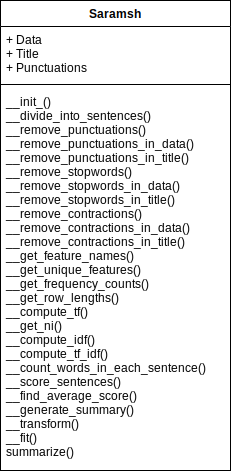

All the pre-processing is taken care by the summarize() itself.
Title is currently not used in generating summary.
Matrix containing how many times each word repeated in a sentence.And the values are normalized by dividing with length of unique words in each sentence.
Single row matrix containing idf scores.
Matrix obtained by multiplying tf into idf matrices.
Scores of each sentence in the given data.
The summary generated using TF-IDF scores.
Term_frequency = (Number of times a term 't' occurs in a sentence) / (Total number of unique words in that sentence)
Inverse_document_frequency = log((Total number of documents)+1 / (Number of documents in which term 't' appears)+1)
Here is a class diagram, containing all the methods within the saramsh package.
Below is an workflow of how the module generates summary using the given data.
ViewBelow is simple starter code :
Data was taken from this article : [click here for article]
This is an inshorts summary of above article : [click here fro inshort summary]
>>> from saramsh_package.saramsh import Saramsh
>>> sm = Saramsh(data , title)
>>> sm.summarize()
0.9810933498889896
Divya Dutta: ‘I once lost a role because I was told I am fair’
She wants to do your role.Earlier, we used to say chhota role nahi karenge.I never said that, but I have seen girls say it.Now they say chhota hai, koi baat nahi, impactful hai na?Divya herself had to colour her skin for Delhi 6.They were looking for a village woman who is darker.They told me you suit the role completely.I asked then why am I not doing it?They replied you are too fair for the role.But I am an actor.I was darkened for Delhi 6.